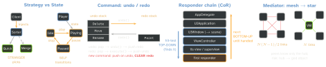

architecture · folio
In one line: Behavioural patterns decide who talks to whom and who decides:
Strategy (client picks the algorithm) · State (object switches itself) ·
Observer (one-to-many notify) · Command (request as object, execute+undo) ·
Template Method (base skeleton, subclass hooks) · Chain of Responsibility (pass until handled) ·
Mediator (hub instead of mesh) · Iterator (next() until nil).
Download PDF Print view LaTeX source


Strategy vs State — “stranger picks vs self transitions”
Strategy: a family of interchangeable algorithms behind one protocol; the CLIENT chooses and injects one; strategies don’t know each other. iOS: sorted(by:) closure, JSONDecoder.keyDecodingStrategy.
State: behaviour changes with internal state, and the states themselves trigger the transition (context.state = Paused()); each knows its successors. iOS: player / download / connection lifecycle; in Swift often an enum + switch. Same class diagram — differ in who changes it.
Observer Subject notifies many subscribers without knowing their types (delegation is the 1:1, answer-back sibling).
iOS: NotificationCenter · KVO (NSObject + @objc dynamic) · Combine (@Published fires on willSet) · @Observable (iOS 17, per-property tracking).
The problem it CAUSES — leaks / retain cycles: publisher keeps your closure, closure captures self, self keeps the subscription → cycle; forgotten observers keep firing.
Fix: sink { [weak self] in … }.store(in: &bag); removeObserver(token) for block-based NotificationCenter; NSKeyValueObservation stops when released.
Command A request wrapped as an object with execute() AND undo() — so it can be queued, logged, retried, sent later, or undone.
Undo/redo = two stacks (diagram above).
iOS: UndoManager (registerUndo(withTarget:handler:)), UIAction, Operation + OperationQueue, target–action.
Template Method Base class owns the algorithm’s skeleton and calls overridable hooks that subclasses fill in.
Hollywood Principle: “don’t call us, we’ll call you”.
iOS: UIViewController lifecycle — viewDidLoad, viewWillAppear, viewDidLayoutSubviews (call super); UIView.draw(_:), layoutSubviews.
vs Strategy = inheritance vs composition: TM varies steps via subclassing (fixed at compile time); Strategy swaps the whole algorithm at runtime.
Chain of Responsibility Pass a request along handlers until one handles it; sender doesn’t know who; may fall off the end.
iOS: responder chain: hit-testing (hitTest(_:with:)) runs TOP-DOWN from the window to the deepest view; the unhandled event then goes BOTTOM-UP via next: view → its VC → superview … → window → UIApplication → app delegate. sendAction(_:to: nil,…) walks it too.
Trap: Decorator: every wrapper runs; CoR: one decides.
Mediator Colleagues talk only to a hub: N(N-1)/2 peer links collapse to N.
iOS: ViewModel, Coordinator (VCs never push each other), UINavigationController.
vs Facade: Facade simplifies a subsystem, one-way, subsystem unaware; Mediator coordinates peers both ways. Risk: god object.
Iterator Walk a collection without exposing its storage. Sequence (makeIterator()) + IteratorProtocol (mutating func next() -> Element?, nil = end).
for x in s ≡ var it = s.makeIterator(); while let x = it.next(). for-in needs only Sequence; Collection adds multi-pass + indices.
AsyncSequence: next() async throws, for try await (URL.lines, AsyncStream).
Remember Strategy: stranger picks · State: self transitions · Template: don’t call us · CoR: hit-test down, next up · Mediator: N2 →N · Command: execute + undo, two stacks · Iterator: nil ends it.
protocol Command { func execute(); func undo() }
final class History { // the invoker
private var undoStack: [Command] = [], redoStack: [Command] = []
func run(_ c: Command) {
c.execute(); undoStack.append(c); redoStack.removeAll() }
func undo() { guard let c = undoStack.popLast() else { return }
c.undo(); redoStack.append(c) }
func redo() { guard let c = redoStack.popLast() else { return }
c.execute(); undoStack.append(c) }
}
// Observer without the leak: weak capture + stored token
vm.$title.sink { [weak self] in self?.label.text = $0 }
.store(in: &bag) // drop it = never firesTraps
- Strategy ≠ State: who changes it — client vs the state itself.
- Observer’s own failure mode is the leak: strong
selfin a stored closure. - Command without
undo()is just a callback. - Responder chain goes UP; hit-testing goes DOWN.
- Mediator ≠ Facade: two-way peers vs one-way simplification.